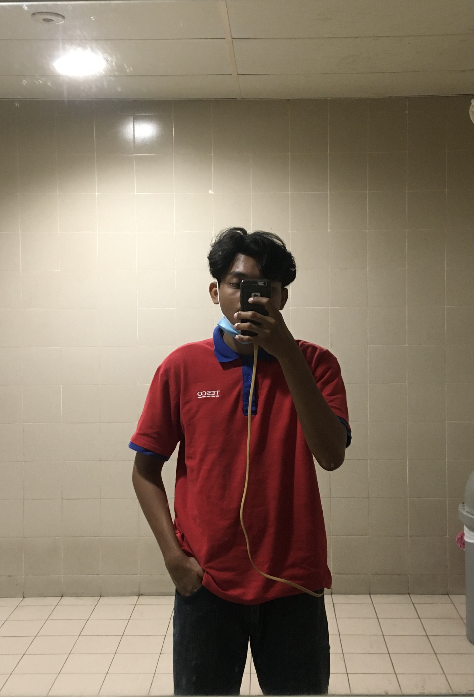
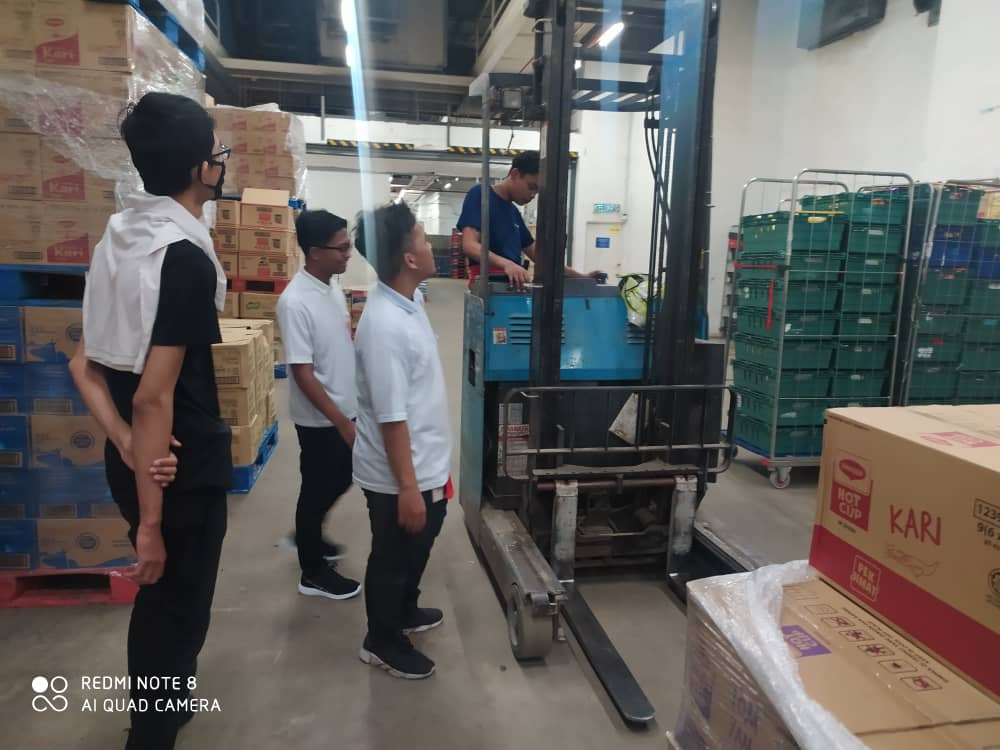

My Experience

My Experience
For experience, I will share about my working experience.
Tesco at Jenjarom, Selangor (2018-2019)
This is my first job after finished school days.
I work on December 2018 until January 2019 only before continue study at UiTM Kedah.
At this store, I working as a grocery associate.
For this work, I only need to top-up and manage the item on the shelf.
I really enjoyed working because the staff were kind and helpful to me.
Tesco at Klang, Selangor (2020)
I work during the semester break on August 2020.
I work for one month and a half only.
At this store, I still working as a grocery associate because I was comfortable with this job.
As my previous workplace, I really enjoyed this job because the staff were a helping hand to me during the pandemic.
This several picture of me at the workplace.
 